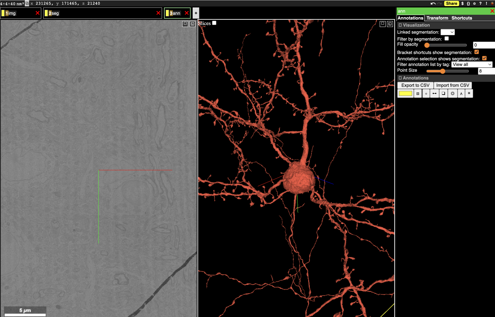

Neuroglancer#
Note
Neuroglancer works best in Chrome and Firefox but does not always work as expected in Safari.

Fig. 16 Neuroglancer can show multiple layers of data, including imagery, segmentation, and more.#
Neuroglancer is a WebGL-based viewer developed by Jeremy Maitin-Shephard at the Google Connectomics team to visualize very large volumetric data, designed in large part for connectomics. We often use Neuroglancer to quickly explore data, visualize results in context, and share data.
To look at the MICrONS data in Neuroglancer, click this link. Note that you will need to authenticate with the same Google-associated account that you use to set up CAVEclient.
Interface Basics#
The Neuroglancer interface is divided into panels. In the default view, one panel shows the imagery in the X/Y plane (left), one shows a 3d view centered at the same location, and the narrow third panel provides information about the specific layer. Note that at the center of the each panel is a collection of axis-aligned red, blue and, green lines. The intersection and direction of each of these lines is consistent across all panels.
Along the top left of the view, you can see tabs with different names. Neuroglancer organizes data into layers, where each layer tells Neuroglancer about a different aspect of the data. The default view has three layers:
imgdescribes how to render imagery.segdescribes how to render segmentation and meshes.annis a manual annotation layer, allowing the user to add annotations to the data.
You can switch between layers by right clicking on the layer tab. You will see the panel at the right change to provide controls for each layer as you click it.
The collection of all layers, the user view, and all annotations is stored as a JSON object called the state.
The basic controls for navigation are:
single click/dragslides the imagery in X/Y and rotates the 3d view.scroll wheel up/downmoves the imagery in Z.right clickjumps the 3d view to the clicked location in either the imagery or on a segmented object.double clickselects a segmentation and loads its mesh into the 3d view. Double clicking on a selected neuron deselects it.control-scrollzooms the view under the cursor in or out.zsnaps the view to the closest right angle.
You can paste a position into Neuroglancer by clicking the x, y, z coordinate in the upper left corner and pasting a space or comma-separated list of numbers and hitting enter. Note that Neuroglancer always works in voxel units, and you can see the resolution of the voxels in the extreme upper left corner.
Selecting objects#
The most direct way to select a neuron is to double click in the imagery to select the object under your cursor. This will load all the voxels associated with that object and also display its mesh in the 3d view.
To see the list of selected objects, you can select the segmentation tab (right click on the seg tab).
Underneath the list of options, there is a list of selected root ids and the color assigned to them in the view.
You can change colors of all neurons randomly by pressing l or individually change colors as desired.
In addition, you can press the checkbox to hide a selected object while keeping it in the list, or deselect it by clicking on the number itself.
You can also copy a root id by pressing the clipboard icon next to its number, or copy all selected root ids by pressing the clipboard icon above the list.
This selection list also allows you to select objects by pasting one or more root ids into the text box at the top of the list and pressing enter.
Annotations#
Annotations are stored in an annotation layer.
The default state has an annotation layer called ann, but you can always add new annotation layers by command-clicking the + button to the right of the layer tabs.
To create an annotation, select the layer (right click on the tab), and then click the icon representing the type of annotation you want to use. The most basic annotation is a point, which is the icon to the left of the list. The icon will change to having a green background when selected.
Now if you control-click in either the imagery or the 3d view, you will create a point annotation at the clicked location. The annotation will appear in the list to the right, with its coordinate (in voxels, not nanometers) displayed. Clicking any annotation in the list will jump to that annotation in 3d space. Each annotation layer can have one color, which you can change with the color picker to the left of the annotation list.
Saving and sharing states#
Like many other websites that require logins, you cannot simply send your URL ot another person to have them see the view.
Instead, to save the current state and make it available to yourself or others in the future, you need to save the state with the Share button at the top right corner.
This will then give you a URL that you can copy and share with others or paste yourself.
A typical sharing URL looks like the following:
https://neuroglancer.neuvue.io/?json_url=https://global.daf-apis.com/nglstate/api/v1/4684616269037568
The first part is the URL for the Neuroglancer viewer, while the part after the ?json_url= is a URL that points to a JSON file that contains the state.
The number at the end of the URL is used to uniquely identify the state and can be used programmatically to retrieve information.
Warning
If a URL contains ?local_id= instead of ?json_url, that means that it cannot be viewed by anyone else or even in another browser on your own computer.
Programmatic Interaction with Neuroglancer States#
Visualizing data in Neuroglancer is one of the easiest ways to explore it in its full context.
The python package nglui was made to make it easy to generate Neuroglancer states from data, particularly pandas dataframes, in a progammatic manner.
The package can be installed with pip install nglui.
Important
The nglui package interacts prominently with caveclient and annotations queried from the database.
See the section on querying the database to learn more.
Parsing Neuroglancer states#
The nglui.parser package can be used to parse Neuroglancer states.
The simplest way to parse the annotations in a Neuroglancer state is to first save the state using the Share button, and then copy the state id (the last number in the URL).
For example, for the share URL https://neuroglancer.neuvue.io/?json_url=https://global.daf-apis.com/nglstate/api/v1/5560000195854336, the state id is 5560000195854336
You can then download the json and then use the annotation_dataframe function to generate a comprehensive dataframe of all the annotations in the state.
import os
from caveclient import CAVEclient
from nglui import parser
client = CAVEclient('minnie65_public')
state_id = 5560000195854336
state = client.state.get_state_json(state_id)
parser.annotation_dataframe(state)
| layer | anno_type | point | pointB | linked_segmentation | tags | group_id | description | |
|---|---|---|---|---|---|---|---|---|
| 0 | syns_in | point | [294095, 196476, 24560] | NaN | [864691136333760691] | [] | None | None |
| 1 | syns_in | point | [294879, 196374, 24391] | NaN | [864691136333760691] | [] | None | None |
| 2 | syns_in | point | [300246, 200562, 24297] | NaN | [864691136333760691] | [] | None | None |
| 3 | syns_in | point | [300894, 201844, 24377] | NaN | [864691136333760691] | [] | None | None |
| 4 | syns_in | point | [294742, 199552, 23392] | NaN | [864691136333760691] | [] | None | None |
| ... | ... | ... | ... | ... | ... | ... | ... | ... |
| 5272 | syns_out | point | [277152, 200746, 22723] | NaN | [864691132294257136] | [] | None | None |
| 5273 | syns_out | point | [298884, 189782, 21453] | NaN | [864691132135519710] | [] | None | None |
| 5274 | syns_out | point | [330182, 198986, 23862] | NaN | [864691132100215248] | [] | None | None |
| 5275 | syns_out | point | [326552, 186446, 24792] | NaN | [864691131892380409] | [] | None | None |
| 5276 | syns_out | point | [275784, 206898, 21524] | NaN | [864691131593914919] | [] | None | None |
5277 rows × 8 columns
Note that tags in the dataframe are stored as a list of integers, with each integer corresponding to one of the tags in the list.
To get the mapping between the tag index and the tag name for each layer, you can use the tag_dictionary function.
parser.tag_dictionary(state, layer_name='syns_out')
{1: 'targets_spine', 2: 'targets_shaft', 3: 'targets_soma'}
Generating Neuroglancer States from Data#
The nglui.statebuilder package is used to build Neuroglancer states that express arbitrary data.
The general pattern is that one makes a “StateBuilder” object that has rules for how to build a Neuroglancer state layer by layer, including selecting certain neurons, and populate layers of annotations.
You then pass a DataFrame to the StateBuiler, and the rules tell it how to render the DataFrame into a Neuroglancer link.
The same set of rules can be used on similar dataframes but with different data, such as synapses from different neurons.
To understand the detailed use of the package, please see the tutorial.
However, a number of basic helper functions allow nglui to be used for common functions in just a few lines.
For example, to generate a Neuroglancer state that shows a neuron and its synaptic inputs and outputs, we can use the make_neuron_neuroglancer_link helper function.
from nglui.statebuilder import helpers
helpers.make_neuron_neuroglancer_link(
client,
864691135122603047,
show_inputs=True,
show_outputs=True,
)
---------------------------------------------------------------------------
RecursionError Traceback (most recent call last)
Cell In[4], line 3
1 from nglui.statebuilder import helpers
----> 3 helpers.make_neuron_neuroglancer_link(
4 client,
5 864691135122603047,
6 show_inputs=True,
7 show_outputs=True,
8 )
File /opt/envs/allensdk/lib/python3.10/site-packages/nglui/statebuilder/helpers.py:727, in make_neuron_neuroglancer_link(client, root_ids, return_as, shorten, show_inputs, show_outputs, sort_inputs, sort_outputs, sort_ascending, input_color, output_color, contrast, timestamp, view_kws, point_column, pre_pt_root_id_col, post_pt_root_id_col, input_layer_name, output_layer_name, ngl_url, link_text, target_site)
725 data_resolution_post = None
726 if show_inputs:
--> 727 syn_in_df = client.materialize.synapse_query(
728 post_ids=root_ids,
729 timestamp=timestamp,
730 desired_resolution=client.info.viewer_resolution(),
731 split_positions=True,
732 )
733 data_resolution_pre = syn_in_df.attrs["dataframe_resolution"]
734 if sort_inputs:
File /opt/envs/allensdk/lib/python3.10/site-packages/caveclient/frameworkclient.py:449, in CAVEclientFull.materialize(self)
444 """
445 A client for the materialization service. See [client.materialize](../client_api/materialize.md)
446 for more information.
447 """
448 if self._materialize is None:
--> 449 self._materialize = MaterializationClient(
450 server_address=self.local_server,
451 auth_client=self.auth,
452 datastack_name=self._datastack_name,
453 synapse_table=self.info.get_datastack_info().get("synapse_table", None),
454 max_retries=self._max_retries,
455 pool_maxsize=self._pool_maxsize,
456 pool_block=self._pool_block,
457 over_client=self,
458 desired_resolution=self.desired_resolution,
459 )
460 return self._materialize
File /opt/envs/allensdk/lib/python3.10/site-packages/caveclient/materializationengine.py:201, in MaterializationClient(server_address, datastack_name, auth_client, cg_client, synapse_table, api_version, version, verify, max_retries, pool_maxsize, pool_block, desired_resolution, over_client)
189 endpoints, api_version = _api_endpoints(
190 api_version,
191 SERVER_KEY,
(...)
197 verify=verify,
198 )
200 MatClient = client_mapping[api_version]
--> 201 return MatClient(
202 server_address,
203 auth_header,
204 api_version,
205 endpoints,
206 SERVER_KEY,
207 datastack_name,
208 cg_client=cg_client,
209 synapse_table=synapse_table,
210 version=version,
211 verify=verify,
212 max_retries=max_retries,
213 pool_maxsize=pool_maxsize,
214 pool_block=pool_block,
215 over_client=over_client,
216 desired_resolution=desired_resolution,
217 )
File /opt/envs/allensdk/lib/python3.10/site-packages/caveclient/materializationengine.py:1924, in MaterializationClientV3.__init__(self, *args, **kwargs)
1922 if self.fc is not None:
1923 if metadata[0].result() is not None and metadata[1].result() is not None:
-> 1924 tables = TableManager(
1925 self.fc, metadata[0].result(), metadata[1].result()
1926 )
1927 self._tables = tables
1928 if self.fc is not None:
File /opt/envs/allensdk/lib/python3.10/site-packages/caveclient/tools/table_manager.py:669, in TableManager.__init__(self, client, metadata, schema)
667 populate_table_cache(client, metadata=self._table_metadata)
668 for tn in self._tables:
--> 669 setattr(self, tn, make_query_filter(tn, self._table_metadata[tn], client))
File /opt/envs/allensdk/lib/python3.10/site-packages/caveclient/tools/table_manager.py:623, in make_query_filter(table_name, meta, client)
614 def make_query_filter(table_name, meta, client):
615 (
616 pts,
617 val_cols,
618 all_unbd_pts,
619 table_map,
620 rename_map,
621 table_list,
622 desc,
--> 623 ) = get_table_info(table_name, meta, client)
624 class_vals = make_class_vals(
625 pts, val_cols, all_unbd_pts, table_map, rename_map, table_list
626 )
627 QueryFilter = attrs.make_class(
628 table_name, class_vals, bases=(make_kwargs_mixin(client),)
629 )
File /opt/envs/allensdk/lib/python3.10/site-packages/cachetools/__init__.py:741, in cached.<locals>.decorator.<locals>.wrapper(*args, **kwargs)
739 except KeyError:
740 pass # key not found
--> 741 v = func(*args, **kwargs)
742 try:
743 cache[k] = v
File /opt/envs/allensdk/lib/python3.10/site-packages/caveclient/tools/table_manager.py:267, in get_table_info(tn, meta, client, allow_types, merge_schema, suffixes)
265 name_ref = None
266 else:
--> 267 schema = table_metadata(ref_table, client).get("schema")
268 ref_pts, ref_cols, ref_unbd_pts = get_col_info(
269 meta["schema"], client, allow_types=allow_types, omit_fields=["target_id"]
270 )
271 name_base = ref_table
File /opt/envs/allensdk/lib/python3.10/site-packages/cachetools/__init__.py:741, in cached.<locals>.decorator.<locals>.wrapper(*args, **kwargs)
739 except KeyError:
740 pass # key not found
--> 741 v = func(*args, **kwargs)
742 try:
743 cache[k] = v
File /opt/envs/allensdk/lib/python3.10/site-packages/caveclient/tools/table_manager.py:314, in table_metadata(table_name, client, meta)
312 warnings.simplefilter(action="ignore")
313 if meta is None:
--> 314 meta = client.materialize.get_table_metadata(table_name)
315 if "schema" not in meta:
316 meta["schema"] = meta.get("schema_type")
File /opt/envs/allensdk/lib/python3.10/site-packages/caveclient/frameworkclient.py:449, in CAVEclientFull.materialize(self)
444 """
445 A client for the materialization service. See [client.materialize](../client_api/materialize.md)
446 for more information.
447 """
448 if self._materialize is None:
--> 449 self._materialize = MaterializationClient(
450 server_address=self.local_server,
451 auth_client=self.auth,
452 datastack_name=self._datastack_name,
453 synapse_table=self.info.get_datastack_info().get("synapse_table", None),
454 max_retries=self._max_retries,
455 pool_maxsize=self._pool_maxsize,
456 pool_block=self._pool_block,
457 over_client=self,
458 desired_resolution=self.desired_resolution,
459 )
460 return self._materialize
File /opt/envs/allensdk/lib/python3.10/site-packages/caveclient/materializationengine.py:201, in MaterializationClient(server_address, datastack_name, auth_client, cg_client, synapse_table, api_version, version, verify, max_retries, pool_maxsize, pool_block, desired_resolution, over_client)
189 endpoints, api_version = _api_endpoints(
190 api_version,
191 SERVER_KEY,
(...)
197 verify=verify,
198 )
200 MatClient = client_mapping[api_version]
--> 201 return MatClient(
202 server_address,
203 auth_header,
204 api_version,
205 endpoints,
206 SERVER_KEY,
207 datastack_name,
208 cg_client=cg_client,
209 synapse_table=synapse_table,
210 version=version,
211 verify=verify,
212 max_retries=max_retries,
213 pool_maxsize=pool_maxsize,
214 pool_block=pool_block,
215 over_client=over_client,
216 desired_resolution=desired_resolution,
217 )
File /opt/envs/allensdk/lib/python3.10/site-packages/caveclient/materializationengine.py:1924, in MaterializationClientV3.__init__(self, *args, **kwargs)
1922 if self.fc is not None:
1923 if metadata[0].result() is not None and metadata[1].result() is not None:
-> 1924 tables = TableManager(
1925 self.fc, metadata[0].result(), metadata[1].result()
1926 )
1927 self._tables = tables
1928 if self.fc is not None:
File /opt/envs/allensdk/lib/python3.10/site-packages/caveclient/tools/table_manager.py:669, in TableManager.__init__(self, client, metadata, schema)
667 populate_table_cache(client, metadata=self._table_metadata)
668 for tn in self._tables:
--> 669 setattr(self, tn, make_query_filter(tn, self._table_metadata[tn], client))
File /opt/envs/allensdk/lib/python3.10/site-packages/caveclient/tools/table_manager.py:623, in make_query_filter(table_name, meta, client)
614 def make_query_filter(table_name, meta, client):
615 (
616 pts,
617 val_cols,
618 all_unbd_pts,
619 table_map,
620 rename_map,
621 table_list,
622 desc,
--> 623 ) = get_table_info(table_name, meta, client)
624 class_vals = make_class_vals(
625 pts, val_cols, all_unbd_pts, table_map, rename_map, table_list
626 )
627 QueryFilter = attrs.make_class(
628 table_name, class_vals, bases=(make_kwargs_mixin(client),)
629 )
[... skipping similar frames: cached.<locals>.decorator.<locals>.wrapper at line 741 (1 times)]
File /opt/envs/allensdk/lib/python3.10/site-packages/caveclient/tools/table_manager.py:267, in get_table_info(tn, meta, client, allow_types, merge_schema, suffixes)
265 name_ref = None
266 else:
--> 267 schema = table_metadata(ref_table, client).get("schema")
268 ref_pts, ref_cols, ref_unbd_pts = get_col_info(
269 meta["schema"], client, allow_types=allow_types, omit_fields=["target_id"]
270 )
271 name_base = ref_table
[... skipping similar frames: cached.<locals>.decorator.<locals>.wrapper at line 741 (1 times)]
File /opt/envs/allensdk/lib/python3.10/site-packages/caveclient/tools/table_manager.py:314, in table_metadata(table_name, client, meta)
312 warnings.simplefilter(action="ignore")
313 if meta is None:
--> 314 meta = client.materialize.get_table_metadata(table_name)
315 if "schema" not in meta:
316 meta["schema"] = meta.get("schema_type")
[... skipping similar frames: cached.<locals>.decorator.<locals>.wrapper at line 741 (530 times), MaterializationClient at line 201 (265 times), MaterializationClientV3.__init__ at line 1924 (265 times), TableManager.__init__ at line 669 (265 times), get_table_info at line 267 (265 times), make_query_filter at line 623 (265 times), CAVEclientFull.materialize at line 449 (265 times), table_metadata at line 314 (265 times)]
File /opt/envs/allensdk/lib/python3.10/site-packages/caveclient/frameworkclient.py:449, in CAVEclientFull.materialize(self)
444 """
445 A client for the materialization service. See [client.materialize](../client_api/materialize.md)
446 for more information.
447 """
448 if self._materialize is None:
--> 449 self._materialize = MaterializationClient(
450 server_address=self.local_server,
451 auth_client=self.auth,
452 datastack_name=self._datastack_name,
453 synapse_table=self.info.get_datastack_info().get("synapse_table", None),
454 max_retries=self._max_retries,
455 pool_maxsize=self._pool_maxsize,
456 pool_block=self._pool_block,
457 over_client=self,
458 desired_resolution=self.desired_resolution,
459 )
460 return self._materialize
File /opt/envs/allensdk/lib/python3.10/site-packages/caveclient/materializationengine.py:201, in MaterializationClient(server_address, datastack_name, auth_client, cg_client, synapse_table, api_version, version, verify, max_retries, pool_maxsize, pool_block, desired_resolution, over_client)
189 endpoints, api_version = _api_endpoints(
190 api_version,
191 SERVER_KEY,
(...)
197 verify=verify,
198 )
200 MatClient = client_mapping[api_version]
--> 201 return MatClient(
202 server_address,
203 auth_header,
204 api_version,
205 endpoints,
206 SERVER_KEY,
207 datastack_name,
208 cg_client=cg_client,
209 synapse_table=synapse_table,
210 version=version,
211 verify=verify,
212 max_retries=max_retries,
213 pool_maxsize=pool_maxsize,
214 pool_block=pool_block,
215 over_client=over_client,
216 desired_resolution=desired_resolution,
217 )
File /opt/envs/allensdk/lib/python3.10/site-packages/caveclient/materializationengine.py:1924, in MaterializationClientV3.__init__(self, *args, **kwargs)
1922 if self.fc is not None:
1923 if metadata[0].result() is not None and metadata[1].result() is not None:
-> 1924 tables = TableManager(
1925 self.fc, metadata[0].result(), metadata[1].result()
1926 )
1927 self._tables = tables
1928 if self.fc is not None:
File /opt/envs/allensdk/lib/python3.10/site-packages/caveclient/tools/table_manager.py:669, in TableManager.__init__(self, client, metadata, schema)
667 populate_table_cache(client, metadata=self._table_metadata)
668 for tn in self._tables:
--> 669 setattr(self, tn, make_query_filter(tn, self._table_metadata[tn], client))
File /opt/envs/allensdk/lib/python3.10/site-packages/caveclient/tools/table_manager.py:623, in make_query_filter(table_name, meta, client)
614 def make_query_filter(table_name, meta, client):
615 (
616 pts,
617 val_cols,
618 all_unbd_pts,
619 table_map,
620 rename_map,
621 table_list,
622 desc,
--> 623 ) = get_table_info(table_name, meta, client)
624 class_vals = make_class_vals(
625 pts, val_cols, all_unbd_pts, table_map, rename_map, table_list
626 )
627 QueryFilter = attrs.make_class(
628 table_name, class_vals, bases=(make_kwargs_mixin(client),)
629 )
[... skipping similar frames: cached.<locals>.decorator.<locals>.wrapper at line 741 (1 times)]
File /opt/envs/allensdk/lib/python3.10/site-packages/caveclient/tools/table_manager.py:267, in get_table_info(tn, meta, client, allow_types, merge_schema, suffixes)
265 name_ref = None
266 else:
--> 267 schema = table_metadata(ref_table, client).get("schema")
268 ref_pts, ref_cols, ref_unbd_pts = get_col_info(
269 meta["schema"], client, allow_types=allow_types, omit_fields=["target_id"]
270 )
271 name_base = ref_table
[... skipping similar frames: cached.<locals>.decorator.<locals>.wrapper at line 741 (1 times)]
File /opt/envs/allensdk/lib/python3.10/site-packages/caveclient/tools/table_manager.py:314, in table_metadata(table_name, client, meta)
312 warnings.simplefilter(action="ignore")
313 if meta is None:
--> 314 meta = client.materialize.get_table_metadata(table_name)
315 if "schema" not in meta:
316 meta["schema"] = meta.get("schema_type")
File /opt/envs/allensdk/lib/python3.10/site-packages/cachetools/__init__.py:741, in cached.<locals>.decorator.<locals>.wrapper(*args, **kwargs)
739 except KeyError:
740 pass # key not found
--> 741 v = func(*args, **kwargs)
742 try:
743 cache[k] = v
File /opt/envs/allensdk/lib/python3.10/site-packages/caveclient/materializationengine.py:519, in MaterializationClientV2.get_table_metadata(self, table_name, datastack_name, version, log_warning)
517 datastack_name = self.datastack_name
518 if version is None:
--> 519 version = self.version
520 endpoint_mapping = self.default_url_mapping
521 endpoint_mapping["datastack_name"] = datastack_name
File /opt/envs/allensdk/lib/python3.10/site-packages/caveclient/materializationengine.py:280, in MaterializationClientV2.version(self)
276 """The version of the materialization. Can be used to set up the
277 client to default to a specific version when timestamps or versions are not
278 specified in queries. If not set, defaults to the most recent version."""
279 if self._version is None:
--> 280 self._version = self.most_recent_version()
281 return self._version
File /opt/envs/allensdk/lib/python3.10/site-packages/caveclient/materializationengine.py:335, in MaterializationClientV2.most_recent_version(self, datastack_name)
318 def most_recent_version(self, datastack_name=None) -> int:
319 """
320 Get the most recent version of materialization for this datastack name
321
(...)
332 Most recent version of materialization for this datastack name
333 """
--> 335 versions = self.get_versions(datastack_name=datastack_name)
336 return np.max(np.array(versions))
File /opt/envs/allensdk/lib/python3.10/site-packages/caveclient/materializationengine.py:360, in MaterializationClientV2.get_versions(self, datastack_name, expired)
358 url = self._endpoints["versions"].format_map(endpoint_mapping)
359 query_args = {"expired": expired}
--> 360 response = self.session.get(url, params=query_args)
361 self.raise_for_status(response)
362 return response.json()
File /opt/envs/allensdk/lib/python3.10/site-packages/requests/sessions.py:602, in Session.get(self, url, **kwargs)
594 r"""Sends a GET request. Returns :class:`Response` object.
595
596 :param url: URL for the new :class:`Request` object.
597 :param \*\*kwargs: Optional arguments that ``request`` takes.
598 :rtype: requests.Response
599 """
601 kwargs.setdefault("allow_redirects", True)
--> 602 return self.request("GET", url, **kwargs)
File /opt/envs/allensdk/lib/python3.10/site-packages/requests/sessions.py:575, in Session.request(self, method, url, params, data, headers, cookies, files, auth, timeout, allow_redirects, proxies, hooks, stream, verify, cert, json)
562 # Create the Request.
563 req = Request(
564 method=method.upper(),
565 url=url,
(...)
573 hooks=hooks,
574 )
--> 575 prep = self.prepare_request(req)
577 proxies = proxies or {}
579 settings = self.merge_environment_settings(
580 prep.url, proxies, stream, verify, cert
581 )
File /opt/envs/allensdk/lib/python3.10/site-packages/requests/sessions.py:484, in Session.prepare_request(self, request)
481 auth = get_netrc_auth(request.url)
483 p = PreparedRequest()
--> 484 p.prepare(
485 method=request.method.upper(),
486 url=request.url,
487 files=request.files,
488 data=request.data,
489 json=request.json,
490 headers=merge_setting(
491 request.headers, self.headers, dict_class=CaseInsensitiveDict
492 ),
493 params=merge_setting(request.params, self.params),
494 auth=merge_setting(auth, self.auth),
495 cookies=merged_cookies,
496 hooks=merge_hooks(request.hooks, self.hooks),
497 )
498 return p
File /opt/envs/allensdk/lib/python3.10/site-packages/requests/models.py:369, in PreparedRequest.prepare(self, method, url, headers, files, data, params, auth, cookies, hooks, json)
367 self.prepare_url(url, params)
368 self.prepare_headers(headers)
--> 369 self.prepare_cookies(cookies)
370 self.prepare_body(data, files, json)
371 self.prepare_auth(auth, url)
File /opt/envs/allensdk/lib/python3.10/site-packages/requests/models.py:626, in PreparedRequest.prepare_cookies(self, cookies)
623 else:
624 self._cookies = cookiejar_from_dict(cookies)
--> 626 cookie_header = get_cookie_header(self._cookies, self)
627 if cookie_header is not None:
628 self.headers["Cookie"] = cookie_header
File /opt/envs/allensdk/lib/python3.10/site-packages/requests/cookies.py:147, in get_cookie_header(jar, request)
141 """
142 Produce an appropriate Cookie header string to be sent with `request`, or None.
143
144 :rtype: str
145 """
146 r = MockRequest(request)
--> 147 jar.add_cookie_header(r)
148 return r.get_new_headers().get("Cookie")
File /opt/conda/lib/python3.10/http/cookiejar.py:1373, in CookieJar.add_cookie_header(self, request)
1369 try:
1371 self._policy._now = self._now = int(time.time())
-> 1373 cookies = self._cookies_for_request(request)
1375 attrs = self._cookie_attrs(cookies)
1376 if attrs:
File /opt/conda/lib/python3.10/http/cookiejar.py:1299, in CookieJar._cookies_for_request(self, request)
1297 cookies = []
1298 for domain in self._cookies.keys():
-> 1299 cookies.extend(self._cookies_for_domain(domain, request))
1300 return cookies
File /opt/conda/lib/python3.10/http/cookiejar.py:1288, in CookieJar._cookies_for_domain(self, domain, request)
1286 cookies_by_name = cookies_by_path[path]
1287 for cookie in cookies_by_name.values():
-> 1288 if not self._policy.return_ok(cookie, request):
1289 _debug(" not returning cookie")
1290 continue
File /opt/conda/lib/python3.10/http/cookiejar.py:1110, in DefaultCookiePolicy.return_ok(self, cookie, request)
1108 fn_name = "return_ok_"+n
1109 fn = getattr(self, fn_name)
-> 1110 if not fn(cookie, request):
1111 return False
1112 return True
File /opt/conda/lib/python3.10/http/cookiejar.py:1124, in DefaultCookiePolicy.return_ok_verifiability(self, cookie, request)
1123 def return_ok_verifiability(self, cookie, request):
-> 1124 if request.unverifiable and is_third_party(request):
1125 if cookie.version > 0 and self.strict_rfc2965_unverifiable:
1126 _debug(" third-party RFC 2965 cookie during unverifiable "
1127 "transaction")
File /opt/conda/lib/python3.10/http/cookiejar.py:738, in is_third_party(request)
728 """
729
730 RFC 2965, section 3.3.6:
(...)
735
736 """
737 req_host = request_host(request)
--> 738 if not domain_match(req_host, reach(request.origin_req_host)):
739 return True
740 else:
File /opt/envs/allensdk/lib/python3.10/site-packages/requests/cookies.py:96, in MockRequest.origin_req_host(self)
94 @property
95 def origin_req_host(self):
---> 96 return self.get_origin_req_host()
File /opt/envs/allensdk/lib/python3.10/site-packages/requests/cookies.py:47, in MockRequest.get_origin_req_host(self)
46 def get_origin_req_host(self):
---> 47 return self.get_host()
File /opt/envs/allensdk/lib/python3.10/site-packages/requests/cookies.py:44, in MockRequest.get_host(self)
43 def get_host(self):
---> 44 return urlparse(self._r.url).netloc
File /opt/conda/lib/python3.10/urllib/parse.py:400, in urlparse(url, scheme, allow_fragments)
380 """Parse a URL into 6 components:
381 <scheme>://<netloc>/<path>;<params>?<query>#<fragment>
382
(...)
397 Note that % escapes are not expanded.
398 """
399 url, scheme, _coerce_result = _coerce_args(url, scheme)
--> 400 splitresult = urlsplit(url, scheme, allow_fragments)
401 scheme, netloc, url, query, fragment = splitresult
402 if scheme in uses_params and ';' in url:
File /opt/conda/lib/python3.10/urllib/parse.py:465, in urlsplit(url, scheme, allow_fragments)
444 def urlsplit(url, scheme='', allow_fragments=True):
445 """Parse a URL into 5 components:
446 <scheme>://<netloc>/<path>?<query>#<fragment>
447
(...)
462 Note that % escapes are not expanded.
463 """
--> 465 url, scheme, _coerce_result = _coerce_args(url, scheme)
466 # Only lstrip url as some applications rely on preserving trailing space.
467 # (https://url.spec.whatwg.org/#concept-basic-url-parser would strip both)
468 url = url.lstrip(_WHATWG_C0_CONTROL_OR_SPACE)
File /opt/conda/lib/python3.10/urllib/parse.py:128, in _coerce_args(*args)
122 def _coerce_args(*args):
123 # Invokes decode if necessary to create str args
124 # and returns the coerced inputs along with
125 # an appropriate result coercion function
126 # - noop for str inputs
127 # - encoding function otherwise
--> 128 str_input = isinstance(args[0], str)
129 for arg in args[1:]:
130 # We special-case the empty string to support the
131 # "scheme=''" default argument to some functions
132 if arg and isinstance(arg, str) != str_input:
RecursionError: maximum recursion depth exceeded while calling a Python object
The main helper functions are:
make_neuron_neuroglancer_link- Shows one or more neurons and, optionally, synaptic inputs and/or outputs.make_synapse_neuroglancer_link- Using a pre-downloaded synapse table, make a link that shows the synapse and the listed synaptic partners.make_point_statebuilder- Generate a statebuilder that to map a dataframe containing points (by default, formatted like a cell types table) to a Neuroglancer link.
In all cases, please look at the docstrings for more information on how to use the functions.